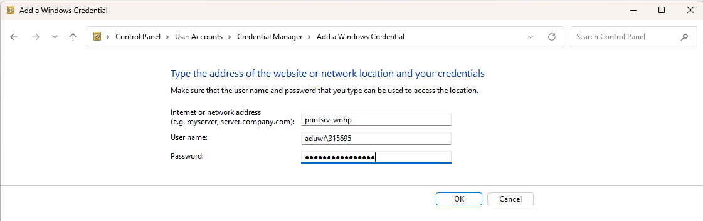
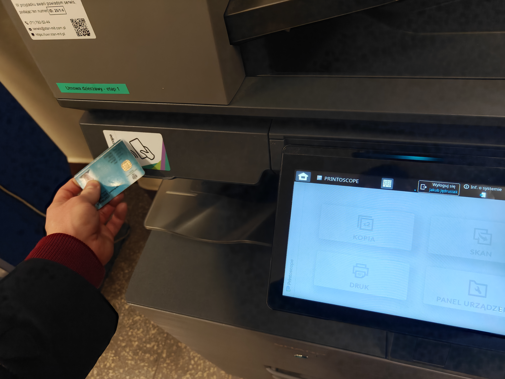

Printoscope – WNHiP UWr
Jak okiełznać pracowniczy system drukowania
Zacznę od instrukcji dla Windowsa, a potem opiszę, jak uzyskać to samo na Linuxie (zakładam, że do celów archiwizacyjnych, bo wątpię, żeby ktoś miał ten problem poza mną). MacOS nie opiszę, bo nie mam i nie lubię, natomiast jak ktoś ma, chce poszukać i jeszcze mu się uda, proszę o sygnał, to dopiszę.
1 Windows
Dodanie drukarki sprowadza się do czterech zadań:
Podłączenie się do VPN UWr.
Dodanie do Menedżera poświadczeń danych logowania do Office.
Dodanie odpowiedniej drukarki do systemu.
Ustawienie PIN w systemie, by wydruk móc rzeczywiście odebrać.
1.1 VPN UWr przez GlobalProtect
Do VPN połączymy się za pomocą znanego i nielubianego GlobalProtect. Najłatwiej wejść na stronę vpn.uwr.edu.pl, w prawym górnym rogu wybrać GlobalProtect Agent, pobrać i zainstalować (zapewne wersja 64-bit jest odpowiednia). Po zainstalowaniu program się uruchamia jako niewielkie okienko proszące o link. Wpisujemy tam:
vpn.uwr.edu.plPo potwierdzeniu otworzy nam się okno przeglądarki, w którym możemy się zalogować danymi do Office’a. Gdy GlobalProtect przemieli nasze żądanie, dopuści nas do wewnętrznej sieci UWr.
1.2 Dodanie poświadczeń
Windows musi wiedzieć, z jakimi danymi podłączyć się do drukarki, bo liczba drukowanych kartek jest powiązana z osobą. Dlatego musimy go poinformować o naszych danych logowania. Niestety standardowy monit, który może się pojawić przy próbie dodania drukarki, wariuje w kontakcie z naszym uniwersytetem i jego zewnętrzym logowaniem, dlatego musimy go ominąć. W tym celu użyjemy Menedżera poświadczeń (Credentials manager). Wyszukujemy go wpisując jego nazwę w menu start lub znajdujemy w Panelu sterowania (w sekcji o użytkownikach). Po wejściu wybieramy Poświadczenia systemu Windows i dodajemy nowe poświadczenie. W polu na adres wpisujemy1:
printsrv-wnhpNazwa użytkownika może być podchwytliwa, bo wymaga nazwy domeny i niekoniecznie jest tożsama z mailem. Doktoranci używają swojego numeru indeksu, podczas gdy pracownicy używają tajemniczego identyfikatora złożonego z pierwszej litery imienia i całego nazwiska, być może z jakimiś dodatkami. Nie wiem, jakie dokładnie reguły tym rządzą. Najpeweniejszy sposób, na dowiedzenie się tego, to przyjście do wydziałowego budynku i zalogowanie się na którymś z lokalnych komputerów, tam otworzenie wiersza polecenia i użycie komendy whoami. Przypadkiem odkryłem też, że jeśli jesteśmy podłączeni do VPN i wejdziemy na stronę http://printoscope.misc.local.uwr.edu.pl (zwróćcie uwagę na http zamiast https), to nazwa użytkownika się wyświetla w komunikacie o błędzie. Niezależnie jaka ona jest, koniecznie trzeba ją poprzedzić członem aduwr\, np. aduwr\jjedrusiak lub aduwr\315695.
Wreszcie hasło to po prostu hasło do Office’a. Po wpisaniu wszystkich danych potwierdzamy.

1.3 Dodawanie drukarki do systemu
Teraz możemy dodać drukarkę. Robimy to standardowo, wchodząc w menu drukarek i klikając przycisk dodawania drukarki. Po chwili wyświetli się opcja dodania drukarki, której nie ma na liście. Klikamy ją, wybieramy drukarkę współdzieloną i w polu tekstowym wpisujemy:
\\printsrv-wnhp\Printoscope
Po wyklikaniu Dalej odpowiednią liczbę razy, drukarkę powinniśmy mieć już dodaną i o ile jesteśmy połączeni z VPN, możemy drukować własne dokumenty. Polecam jednak dostosować domyślne ustawienia drukarki, żeby na pewno drukowała na A4 i nie na czarno-biało, co zrobimy w odpowiednim menu Windowsa.
1.4 Dodanie PIN do Printoscope
Jeśli jednak spróbujemy wysłać dokument do druku i podejdziemy do drukarki, nie znajdziemy tam naszych dokumentów. By rzeczywiście się wydrukowały, musimy zatwierdzić je na samej drukarce. Żeby jednak nie musieć wpisywać swojego maila i hasła na niewygodnym ekranie drukarki, warto jest ustawić sobie PIN. Można to zrobić wchodząc na http://printoscope.uwr.edu.pl/ (musimy być podłączeni do VPN) i logując się danymi do Office’a. Dodajemy PIN i gotowe – możemy go wpisywać na ekranie drukarki zamiast loginu i hasła. Gdy stoimy przy drukarce, wciskamy mocno guzik uruchamiający na prawym boku ekranu (przynajmniej w modelu stojącym w IPs tak jest), logujemy się wpisując PIN, wybieramy kafelek Druk i w menu, które się wtedy wyświetli, zobaczymy nazwę domumentu, który wcześniej wysłaliśmy z naszego komputera. Raz jeszcze zatwierdzamy i wtedy dopiero otrzymujemy swoje dokumenty. Dzięki temu możemy wykorzystać dowolną podłączoną do systemu drukarkę na całym WNHiP, niekoniecznie tę, do której jesteśmy przyzwyczajeni2.
1.4.1 Bonus: karty zbliżeniowe
Panel Printoscope daje też możliwość logowania się do drukarek kartą pracowniczą zamisast hasłem czy PIN. Nie mam takiej karty, ale z ciekawości spróbowałem zamiast karty pracowniczej dodać swoją legitymację doktorancką i inne karty zbliżeniowe. W tym celu pobrałem aplikację NFC Tools i przyłożyłem do telefonu swoją legitymację. Uzyskałem w ten sposób numer seryjny, który przepisałem do Printoscope bez dwukropków (czyli jeśli numer seryjny byłby 12:34:56:78, to w Printoscope wpisałem 12345678). Po dodaniu podszedłem do drukarki, przyłożyłem legitymację w odpowiednim miejscu i rzeczywiście to zadziałało! Teraz legitymacja zastępuje mi PIN czy hasło. Muszę tylko zabrać kartę od czytnika dosć szybko, po pierwszym piśnięcu drukarki, bo inaczej wylogowuje. Spróbowałem tego samego z dowodem osobistym i kartą bankową, ale te niestety (albo stety) nie zadziałały. Wygląda na to, że muszą to być proste karty zbliżeniowe typu właśnie legitymacja, karta parkingowa, brelok do domofonu, może Multisport albo Urbancard. Warto przetestować. Jeśli NFC Tools po przyłożeniu karty pokazują rozaj taga Mifare Classic 1k lub standard ISO 14443A, to powinno zadziałać. Inne trzeba po prostu sprawdzić, a jak komuś zależy, to czysta karta zbliżeniowa kosztuje 2-6 zł.

2 Linux
Workflow na Linuxie jest bardzo podobny, jak na Windowsie, tylko nieco bardziej upierdliwy w kilku miejscach, bo Printoscope to Windows Print Server, a standardy kompatybilności i otwartości Microsoft znamy.
2.1 VPN UWr przez GlobalProtect
Do VPN też potrzebujemy GlobalProtect w jakiejś formie. Konkrety zależą od dystrybucji, ale niestety zwykły Openconnect nie radzi sobie z logowaniem przez Office. Osobiście użyłem GlobalProtect-openconnect, który istnieje w wersji Debian/Ubuntu czy Arch (jest w AUR). Procedura jest właściwie identyczna, co w przypadku zwykłego GlobalProtect, czyli link vpn.uwr.edu.pl i logowanie danymi Office’a. Interfejs graficzny ma trial 10 dni, ale narzędzie CLI działa i potem (por. dokumentacja).
2.2 Dodanie poświadczeń
To jest ten bardziej irytujący moment. Samba w Windowsie potrafi sama znaleźć \\printsrv-wnhp, jednak Linux potrzebuje rzeczywistego adresu IP. Nie wiem, czy wolno jest mi tutaj go podać, więc na wszelki wypadek opiszę tylko metodę, jak go znaleźć (choć zawsze można do mnie napisać). Niestety potrzbujemy do tego podłączonego do VPN UWr komputera z Windowsem lub maszynę wirtualną (z zainstalowanym GlobalProtect). Może być jeden z komputerów na miejscu, to będzie można przy okazji upewnić się co do nazwy użytkownika. By poznać prawdziwy adres IP tej lokalizacji siecowej, musimy w wiersz polecenia (nie PowerShell, a zwykłe cmd) wpisać następującą komendę:
net use \\printsrv-wnhp /user:aduwr\NAZWA_UŻYTKOWNIKAJak pisałem przy Windowsie, nazwa użytkownika jest podchwytliwa i można ją uzyskać używając komendy whoami na lokalnym komputerze lub przez VPN wchodząc w link, który podałem wyżej (o ile tego nie naprawili, bo to wygląda jak błąd). Jeśli ta komenda rozwiązała się poprawne, nawiązaliśmy połączenie. Teraz musimy sprawdzić IP poprzez:
netstat -ano | findstr 445Jeśli wszystko poszło dobrze, to obok słowa ESTABLISHED zobaczymy interesujący nas adres IP z portem 445 (coś w stylu 127.0.0.1:445, gdzie część przed dwukropkiem to właściwy adres IP). Zapisujemy go sobie (bez portu) i wracamy do Linuxa.
2.3 Dodawanie drukarki do systemu
By dodać drukarkę do systemu, musimy wiedzieć jeszcze, gdzie jest plik PPD ze sterownikiem drukarki. Interesujący nas sterownik to Generic PCL 6/PCL XL Printer Foomatic/pxlcolor. Najważniejsze elementy tej nazwy to PCL 6 i pxlcolor, pozostałe kawałki ujdą. By znaleźć ten plik w naszym własnym systemie, używamy komendy:
lpinfo -m | grep -i pcl | grep -i pxlcolorPowinniśmy dostać nazwę pliku z rozszerzeniem .ppd. Kopiujemy ją (bez opisu, tylko od początku linijki do rozszerzenia .ppd). W moim systemie potrzebna nazwa to foomatic:Generic-PCL_6_PCL_XL_Printer-pxlcolor.ppd. W razie czego można użyć nowszego lub innego sterownika Generic, ale warto się zorientować, jaki powinien zadziałać. Wreszcie łączymy to wszystko w całość, dodając drukarkę poleceniem:
sudo lpadmin -p Printoscope \
-E \
-v "smb://ADUWR;NASZ_LOGIN@ADRES_IP_Z_POPRZEDNIEGO_KROKU/Printoscope" \
-m "NAZWA_PLIKU_PPD"Oczywiście podstawiamy nasz login (już bez aduwr\, bo to jest już przed średnikiem), poznany wcześniej adres IP i nazwę pliku PPD. Po dodaniu przestawiamy domyślny rozmiar papieru na A4 i tryb na zwykły (żeby nie było zawsze czarno-biało). Najłatwej zrobić to w systemowym graficznym menu drukarek. Moja komenda (ze zmienionym dla bezpieczeństwa IP) wyglądała ostatecznie tak:
sudo lpadmin -p Printoscope \
-E \
-v "smb://ADUWR;315695@127.0.0.1/Printoscope" \
-m "foomatic:Generic-PCL_6_PCL_XL_Printer-pxlcolor.ppd"Drukowanie z Linuxa ma jedną znaczącą wadę – serwer drukowania nie widzi nazw dokumentów, które wysyłamy do druku i wszystkie oznacza Remote Downlevel Document. Nie brzmi to strasznie, ale sprawia, że jak wyślemy jeden dokument do druku, to musimy go wydrukować lub usunąć na ekranie drukarki, zanim będziemy mogli wydrukować kolejny. Nie znalazłem jeszcze obejścia dla tego problemu.
2.4 Dodanie PIN do Printoscope
Kwestia PIN i kart zbliżeniowych wygląda identycznie jak przy Windowsie, więc odsyłam tam. Trzeba to zrobić, chyba że ktoś chce na klawiaturze na ekranie drukarki wpisywać maila i hasło do Office’a.